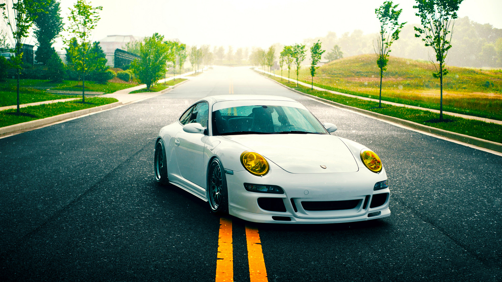
History
Origin
Ferdinand Porsche (1875–1951) founded the company called "Dr. Ing. h. c. F. Porsche GmbH" with Adolf Rosenberger and Anton Piëch in 1931.
The main offices was at Kronenstraße 24 in the centre of Stuttgart.
Initially, the company offered motor vehicle development work and consulting, but did not build any cars under its own name.
One of the first assignments the new company received was from the German government to design a car for the people; that is, a Volkswagen.
This resulted in the Volkswagen Beetle, one of the most successful car designs of all time.The Porsche 64 was developed in 1939 using many components from the Beetle.
During World War II,Volkswagen production turned to the military version of the Volkswagen Beetle, the Kübelwagen,52,000 produced, and Schwimmwagen,15,584 produced. Porsche produced several designs for heavy tanks during the war, losing out to Henschel & Son in both contracts that ultimately led to the Tiger I and the Tiger II. However, not all this work was wasted, as the chassis Porsche designed for the Tiger I was used as the base for the Elefant tank destroyer.
Porsche also developed the Maus super-heavy tank in the closing stages of the war, producing two prototypes. Ferdinand Porsche's biographer, Fabian Müller, wrote that Porsche had thousands of people forcibly brought to work at their factories during the war.
The workers wore the letter "P" on their clothing at all times. It stood not for "Porsche", but for "Poland".
At the end of World War II in 1945, the Volkswagen factory at KdF-Stadt fell to the British. Ferdinand lost his position as chairman of the board of management of Volkswagen, and Ivan Hirst, a British Army major, was put in charge of the factory. (In Wolfsburg, the Volkswagen company magazine dubbed him "The British Major who saved Volkswagen".) On 15 December of that year, Ferdinand was arrested for war crimes, but not tried. During his 20-month imprisonment, Ferdinand Porsche's son, Ferry Porsche, decided to build his own car, because he could not find an existing one that he wanted to buy. He also had to steer the company through some of its most difficult days until his father's release in August 1947. The first models of what was to become the 356 were built in a small sawmill in Gmünd, Austria. The prototype car was shown to German auto dealers, and when pre-orders reached a set threshold, production (with aluminum body) was begun by Porsche Konstruktionen GesmbH, founded by Ferry and Louise. Many regard the 356 as the first Porsche simply because it was the first model sold by the fledgling company. After production of the 356 was taken over by the father's Dr. Ing. h.c. F. Porsche GmbH in Stuttgart in 1950, Porsche commissioned a Zuffenhausen-based company, Reutter Karosserie, which had previously collaborated with the firm on Volkswagen Beetle prototypes, to produce the 356's steel body. In 1952, Porsche constructed an assembly plant (Werk 2) across the street from Reutter Karosserie; the main road in front of Werk 1, the oldest Porsche building, is now known as Porschestrasse. The 356 was road-certified in 1948.
Company logo
Weimar-era Württemberg coat of arms

Coat of arms of Stuttgart

Porsche's company logo stems from the coat of arms of the Free People's State of Württemberg of Weimar Germany of 1918–1933, which had Stuttgart as its capital.
(The Bundesland of Württemberg-Hohenzollern used the same arms from 1945 to 1952, while Stuttgart during these years operated as the capital of adjacent Württemberg-Baden.) The arms of Stuttgart appear in the middle of the logo as an inescutcheon, for the company had its headquarters in Stuttgart. The heraldic symbols, combined with the texts "Porsche" and "Stuttgart", do not form a conventional coat of arms, since heraldic achievements never spell out the name of the armiger nor the armiger's home town in the shield.
Württemberg-Baden and Württemberg-Hohenzollern both in 1952 became part of the present Bundesland of Baden-Württemberg after the political consolidation of West Germany in 1949, but the old design of the arms of Württemberg lives on in the Porsche logo. On 30 January 1951, not long before the formation of Baden-Württemberg, Ferdinand Porsche died from complications following a stroke.
PORSCHE cars
 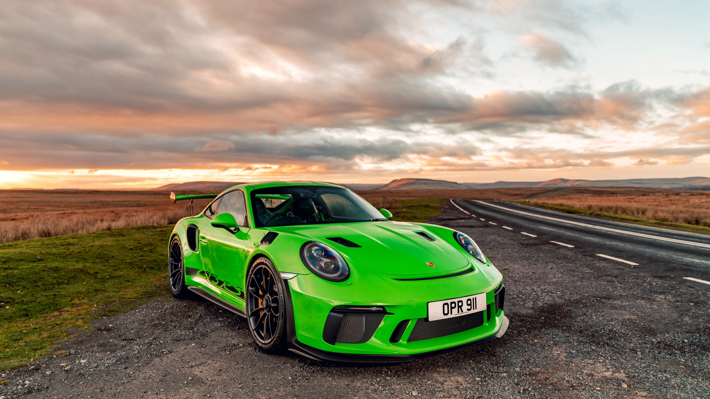
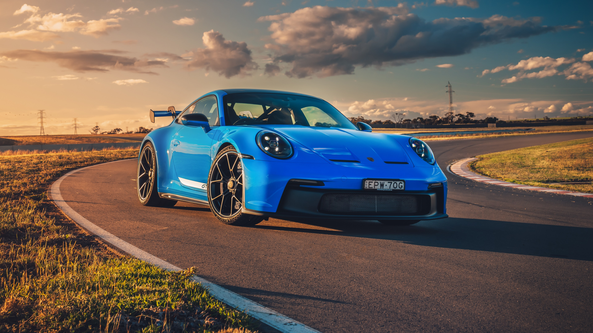
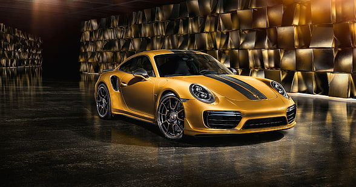
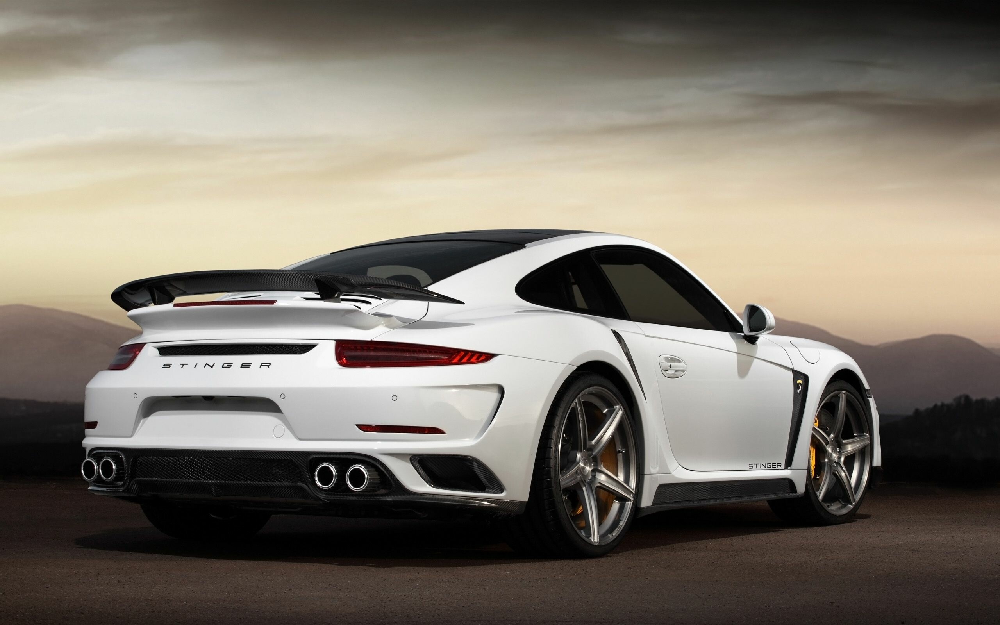
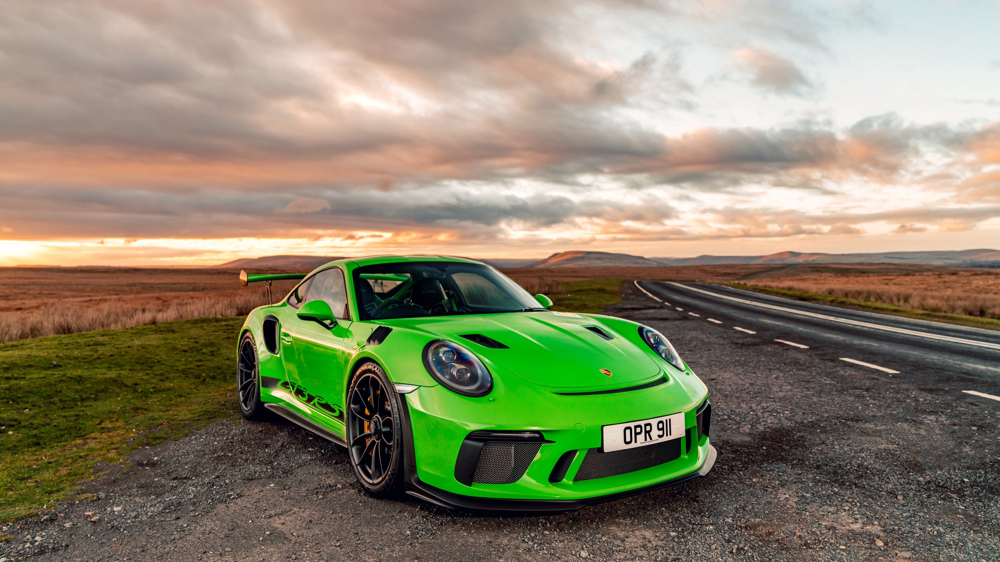
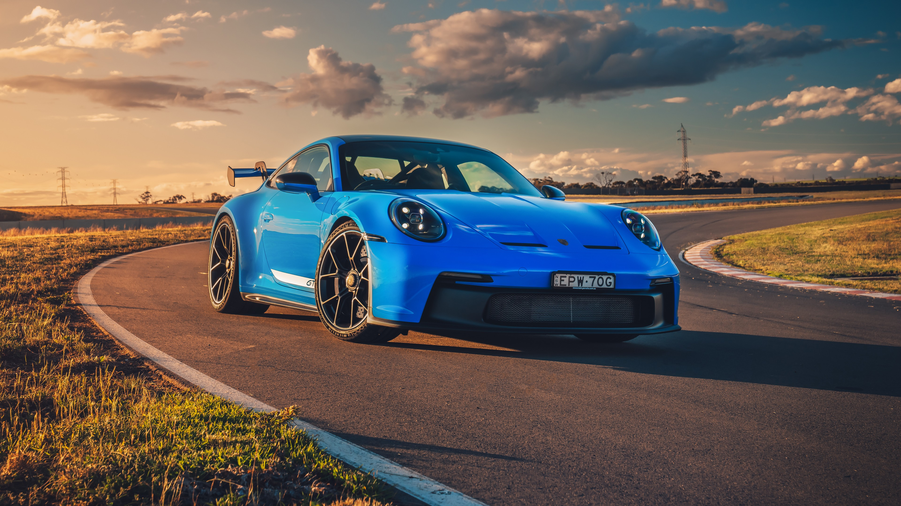
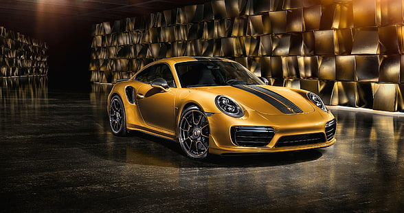
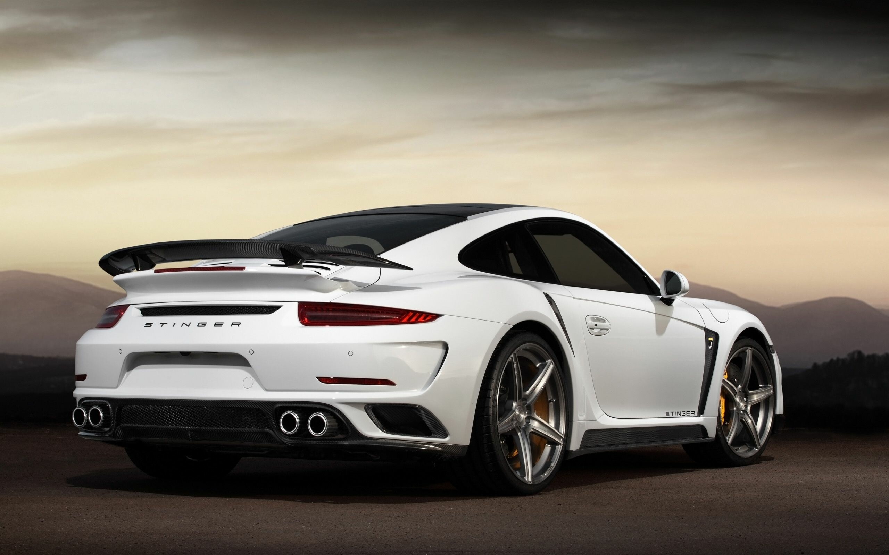
Models
The current Porsche model range includes sports cars from the Boxster roadster to their most famous product, the 911.
The Cayman is a coupé otherwise similar to the Boxster. The Cayenne is Porsche's mid-size luxury sport utility vehicle (SUV).
A high performance luxury saloon/sedan, the Panamera, was launched in 2009.
Consumer models
* Porsche 356
* Porsche 911 4-seat coupe, targa and cabriolet
* Porsche 911 (classic)
* Porsche 930
* Porsche 964
* Porsche 993
* Porsche 996
* Porsche 997
* Porsche 991
* Porsche 992
* Porsche 911 GT1 Straßenversion
* Porsche 912
* Porsche 914
* Porsche 918 Spyder
* Porsche 924
* Porsche 928 4-seat grand tourer
* Porsche 944
* Porsche 959
* Porsche 968
* Porsche Boxster 2-seat roadster
* Porsche 986
* Porsche 987
* Porsche 981
* Porsche 982
* Porsche Carrera GT
* Porsche Cayman 2-seat coupe
* Porsche 987
* Porsche 981
* Porsche 982
* Porsche Cayenne Mid-size crossover SUV
* Porsche Macan Compact crossover SUV
* Porsche Panamera 4- or "4+1"-seat liftback and shooting-brake estate
* Porsche Taycan 4- or "4+1"-seat sedan and shooting-brake estate EV
Racing models
* Porsche 64
* Porsche 360 Cisitalia
* Porsche 550 Spyder
* Porsche 718
* Porsche 787
* Porsche 804
* Porsche 904
* Porsche 906
* Porsche 907
* Porsche 908
* Porsche 909 Bergspyder
* Porsche 910
* Porsche 911 GT1
* Porsche 917
* Porsche 919 hybrid
* Porsche 934
* Porsche 934/5
* Porsche 935
* Porsche 936
* Porsche 956
* Porsche 961
* Porsche 962
* Porsche 99X Electric
* Porsche-March 89P
* Porsche WSC-95 / LMP1-98
* Porsche LMP2000 (never raced)
* Porsche RS Spyder (9R6)
Prototypes and concept cars
* Porsche 114
* Porsche 356/1
* Porsche 695 (911 prototype)
* Porsche 901 (911 prototype)
* Porsche 916 (flat-6 914)
* Porsche 942
* Porsche 959 prototype
* Porsche 918 RSR
* Porsche 965
* Porsche 969
* Porsche 989
* Porsche Boxster concept
* Porsche C88
* Porsche Panamericana
* Porsche Boxster E
* Porsche Panamera Sport Turismo concept
* Porsche Mission E
Hybrid and electric vehicles
In 2010, Porsche launched the Cayenne S Hybrid and announced the Panamera S Hybrid, and launched the Porsche 918 sports car in 2014, which also features a hybrid system.
Also a plug-in hybrid model called the Panamera S E-Hybrid was released in October 2013 in the United States and during the fourth quarter of 2013 in several European countries.
Porsche developed a prototype electric Porsche Boxster called the Boxster E in 2011 and a hybrid version of the 911 called the GT3 R Hybrid, developed with Williams Grand Prix Engineering in 2010.
In July 2014, Porsche announced the launch by the end of 2014 of the Porsche Cayenne S E-Hybrid a plug-in hybrid, which will displace the Cayenne S Hybrid from the lineup. The S E-Hybrid will be the first plug-in hybrid in the premium SUV segment and will allow Porsche to become the first automaker with three production plug-in hybrid models.
In July 2017, Porsche installed its first 350 kW, 800V charging station, which the upcoming Porsche Mission E will use. As of 2017, the Porsche charging station is the fastest electric vehicle charging station in the world, being able to charge a Porsche Mission E up to 80% within 15 minutes. Porsche is also currently working with other manufacturers to make Porsche charging stations compatible with other electric vehicles.
In August 2018, Porsche announced that the formerly named Mission E electric car will be named "Taycan" meaning 'leaping horse'. The prototype electric car is expected to be revealed in 2019 after its completion.
classic cars
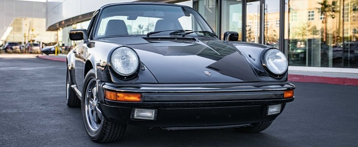
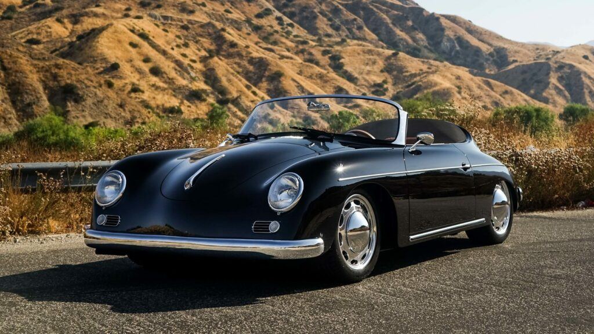
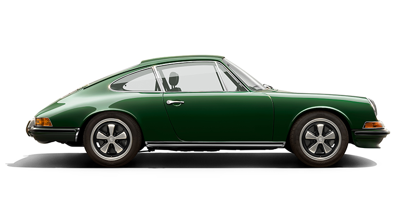
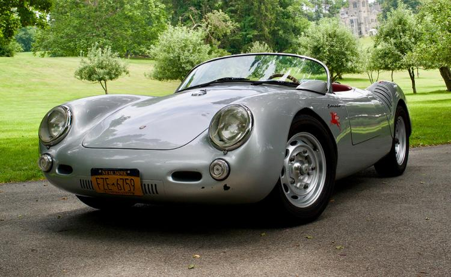
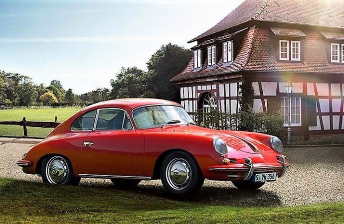
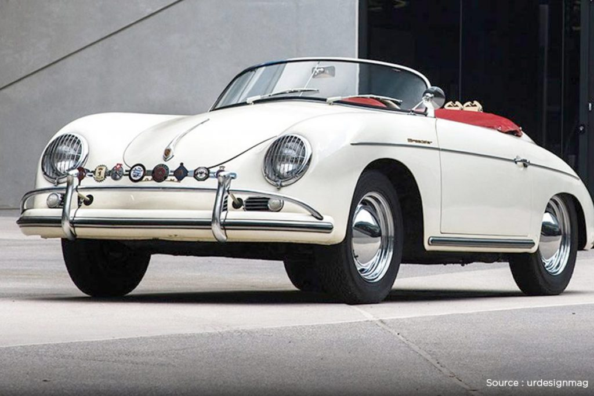
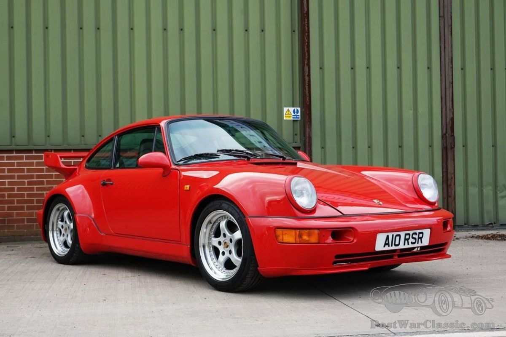
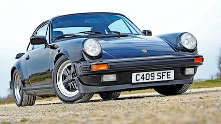
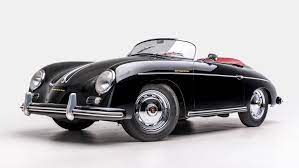
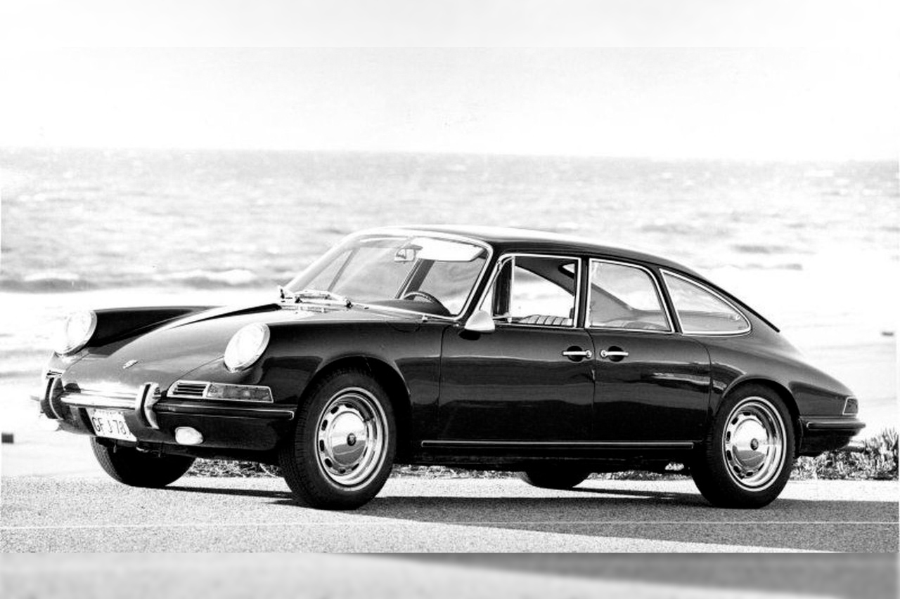